| 日付 | 2012年4月28日（土） - 2012年4月30日（月） | ||||
|---|---|---|---|---|---|
| 山域 | 駿河 | ||||
| メンバー | 家族（妻、長女・1歳） | ||||
| 山行形態 | 子連れ2泊3日ホテル泊 | ||||
| アクセス | 車 | ||||
| ルート (Map1) |
|
待ちに待ったGW。どこか旅行に行きたいが、GWは案外行先選択に困ることが多い。
この季節、多くの山はまだ雪の下なのだ。それにどこに行っても混雑が待っている。
今年のGWは近すぎず、遠すぎず、それなりの山があり、雪が少なそうで、人も少なそうな
静岡の梅ヶ島温泉に行ってみることにする。
かつて2回訪れたことのある場所だが、梅ヶ島温泉で宿泊するのは今回が初めてだ。
1日目
GW初日の移動で渋滞に巻き込まれるのは避けたいので、朝の5時に自宅を出発。
無事、新東名高速道路に乗ることができる。ここまで来れば渋滞はない。
新東名は路面の質が良いのか非常に静かで、道路の幅も広く
体感速度は実際の車速の-20km/hくらいに感じる。
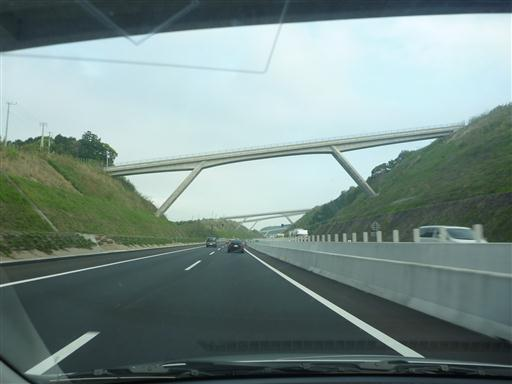
7:57 大谷崩登山道入口到着。標高1270m。
道路が空いていたおかげでかなり早い時間に到着できた。
それでも駐車場には既に結構な数の車が停まっている。
山と高原地図にはトイレがあると記載されていたが見当たらない。
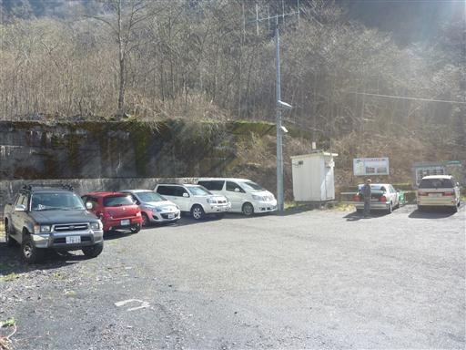
駐車場からは正面に大谷崩が望める。
ここは1707年に山体崩壊を起こした跡で、日本三大崩れに選ばれている。
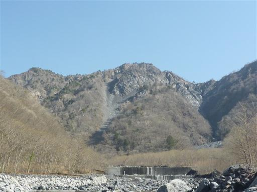
車道終点から登山道に入っていく。
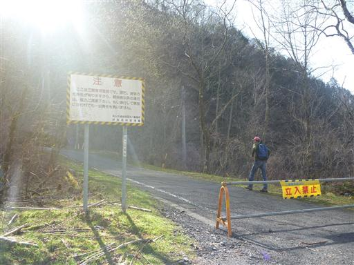
大きな沢を渡る。この辺りは若干道がわかりにくい。
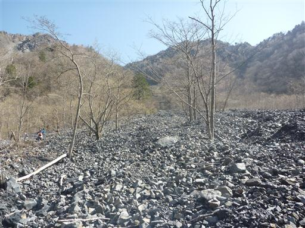
最初は傾斜の緩い樹林帯の中を歩いていく。
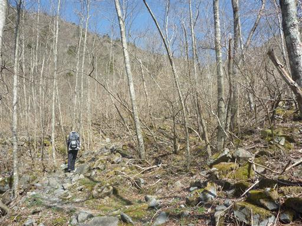
樹林帯を抜けると目の前に大谷崩のガレ場が広がる。
ここから、このガレ場をまっすぐ登っていく。
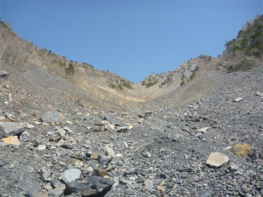
傾斜は30度～40度程度。
上に行くほど傾斜はきつくなっていき、登山道は瓦礫のジグザグ道になる。
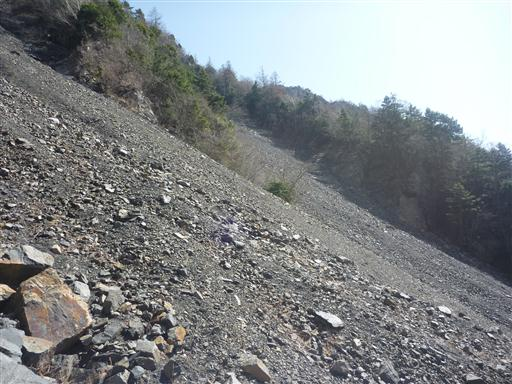
上を見上げると、大谷崩の崩壊斜面が広がっている。
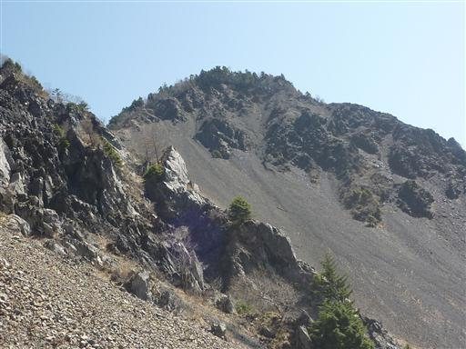
ふと左手を見ると、カモシカが一匹姿を現して新芽を食べている。
こちらの存在には気づいているようだが、距離があるからか逃げる様子はない。
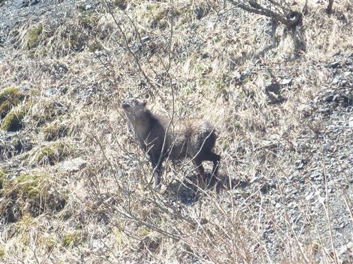
ガレ場の上部まで来ると、稜線が近くに見えてくる。
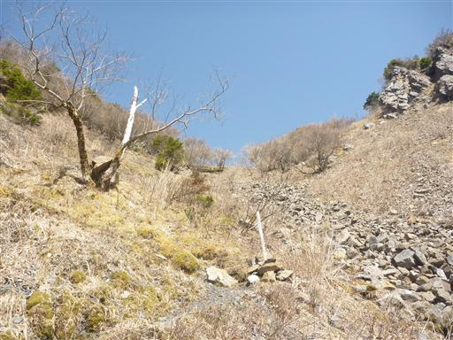
9:48 新窪乗越到着。
ここから稜線を歩いて山伏を目指す。以前山伏に登った時にも歩いた道だ。
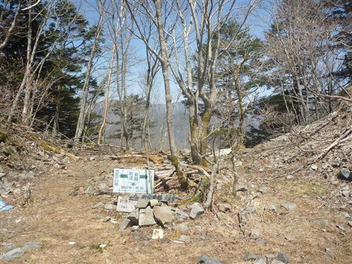
振り返ると、ここまで歩いて来たガレ場が眼下に見える。
遠くに見えるのは以前辿った安倍奥東山稜だ。
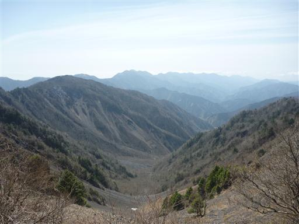
新窪乗越から少し大谷嶺の方に登ると、大谷崩のガレ場がよく見える。
以前この辺りを歩いた時は天気が悪くほとんど何も見えなかったため、
4年越しの望みが叶った展望だ。
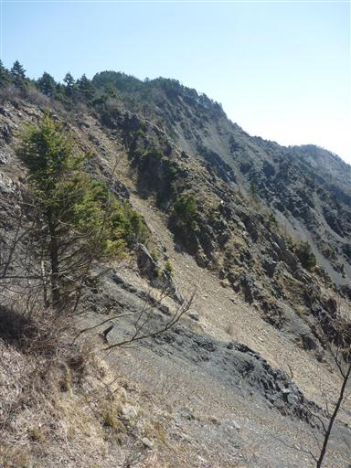
ここから山頂まで、距離は遠いが傾斜の緩やかな尾根が続く。
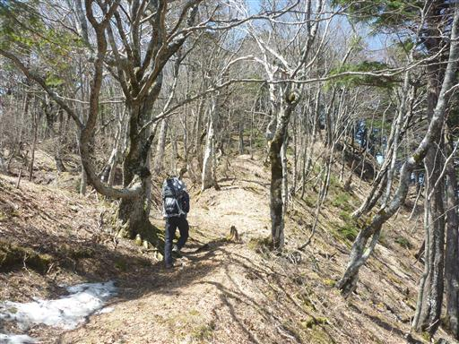
複雑に幹が絡み合った不気味な木が生えている。
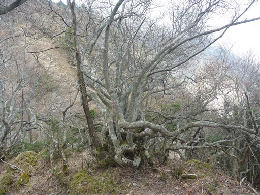
右手はるか遠くに北岳が見える。こちらから見る北岳は尖っていて格好いい。
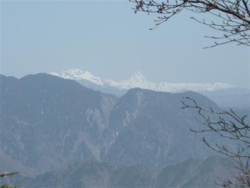
稜線の向こう側には大無間山の頭が見えている。懐かしい山だ。
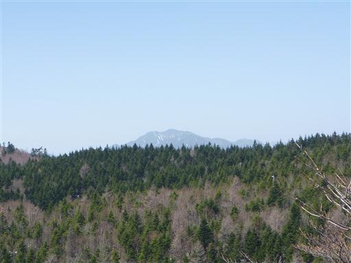
美しい樹林帯の中を歩く。今日は本当に天気が良い。
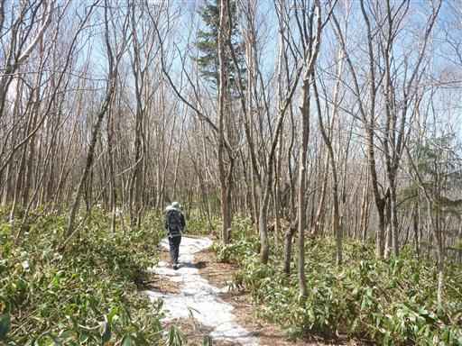
道中にワイヤーが張られている。中途半端な位置にある邪魔なワイヤーだ。
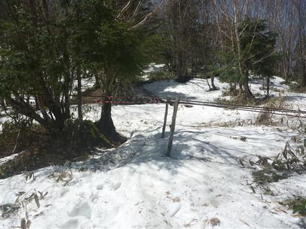
この辺りの尾根は広々としていて、歩いていて気持ちの良いところだ。
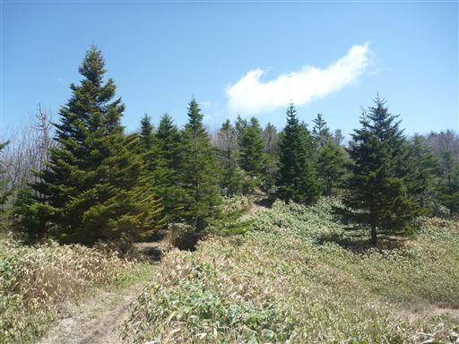
山頂に近づくと辺りは雪に覆われる。
広い尾根なので、登山道がどこにあるのか探すのがなかなか難しい。
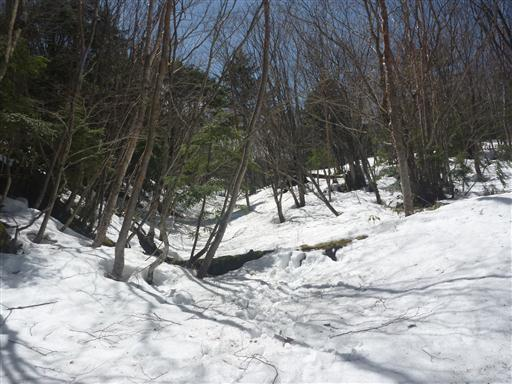
11:16 山伏山頂到着。標高2014m。
駐車場から40分程度で登れる登山道もあるため、山頂はそこそこ賑わっている。
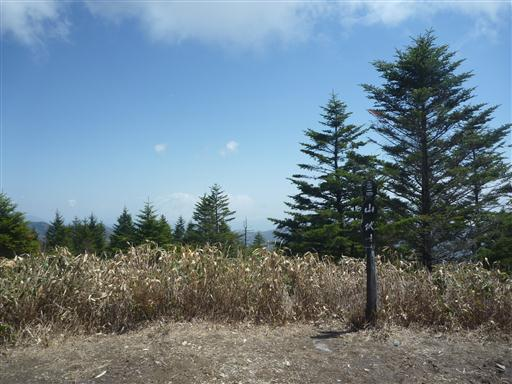
北側には南アルプスの大展望が広がる。
ビッグ3の聖、赤石、荒川や笊ヶ岳などが見えている。
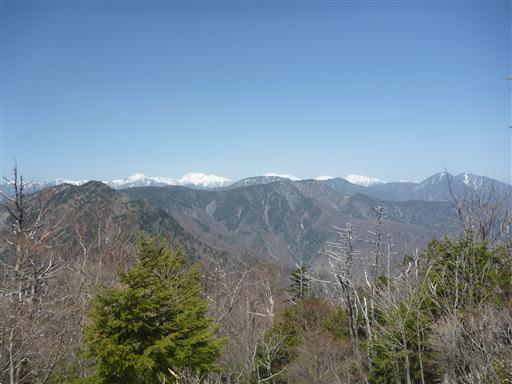
東側には雲がかかっているが、かろうじて富士山が望める。
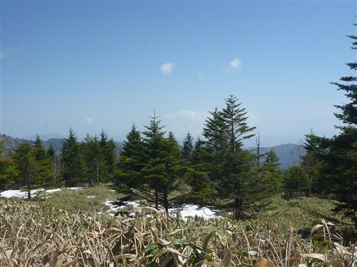
昼食をとり、大展望を満喫したら、下山を開始する。
残念ながら周回ルートはないため、元来た道を戻る。
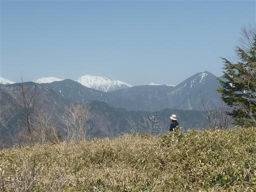
新窪乗越から大谷崩の展望を得るために、再び大谷嶺の方に少し足を延ばしてみる。
見事に山がスパッと切れ落ちている。
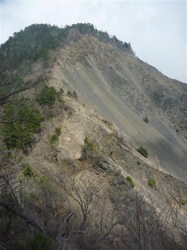
あとは大谷崩のガレ場を延々と下るのみ。
ガレ場の中にカモシカを3匹見つける。こんなところに食べ物はないと思うが何をしているのだろう？
なかなか出会えないカモシカに行きも帰りも出会えたので、この山はカモシカの数がかなり多いのだろう。
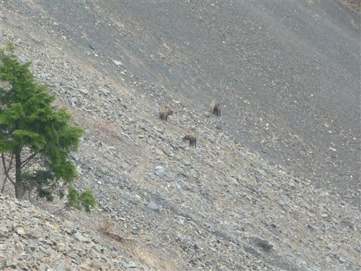
下山中にだんだんと雲が出てくる。下から大谷崩を見上げると、すでに雲に覆われている。
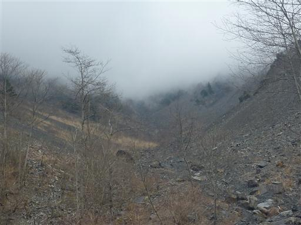
石の下から水が湧き出している。地面の下を流れてきた水だが結構な水量だ。
14:50 大谷崩登山道入口到着。
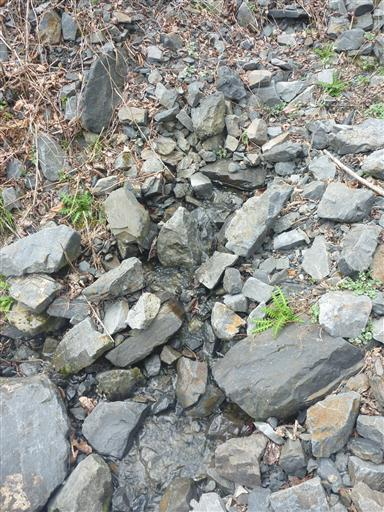
今回は山伏の麓にある梅ヶ島温泉に宿泊する。
宿は、かつて何度かお世話になった梅ヶ島温泉バス停のすぐ裏にある梅薫楼。
梅ヶ島温泉で一番の歴史を誇る老舗旅館だ。
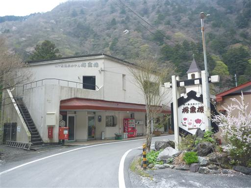
夕食まで時間があるので梅ヶ島温泉街を探索する。
こちらは源泉跡地にある湯之神社。
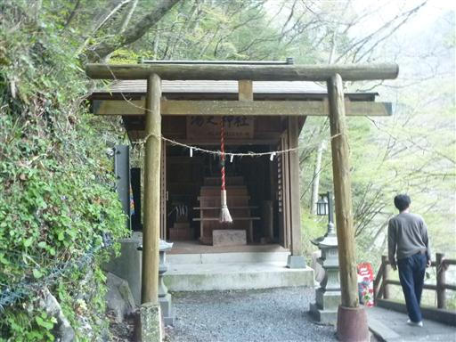
神社の裏に温泉湯滝がある。湯が流れているわけではなく、大した滝ではない。
売店一つない静かな温泉街は規模も小さく、ぐるっと一回りして宿に戻る。